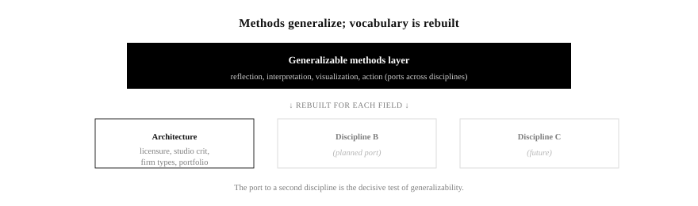
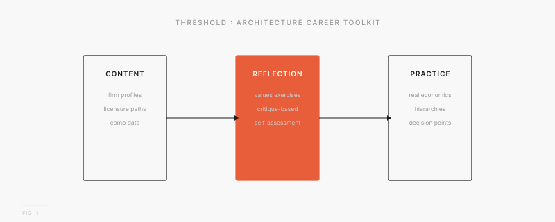
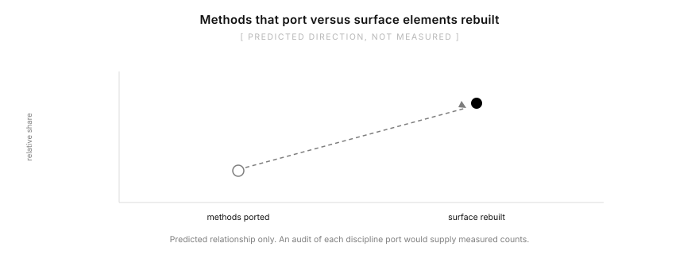

1. Introduction
A senior architecture student approaching graduation faces a set of career decisions that bear almost no resemblance to those a senior in any other field faces. The decisions involve firm type (small studio vs. midsize firm vs. corporate practice vs. starchitect office), practice model (residential vs. commercial vs. institutional vs. urban), licensure pathway (Architectural Experience Program hours, Architect Registration Examination divisions, state-specific requirements), portfolio production (final reviews, applications-ready package, the difference between studio work and professional work), and a constellation of soft questions about creative identity, financial reality, and the discipline’s expectations for early-career labor. None of these decisions is well-supported by the career-services infrastructure most universities provide.
The standard institutional response is to apply generic career-services tools to the architecture student’s situation. A resume workshop. An advising appointment. An assessment tool that returns a ranked list of broadly defined occupations. These tools are not wrong in any obvious way; they are, on the architecture student’s specific situation, beside the point. The categories they assume (job titles, industry sectors, technical-skill keywords) are not the categories architecture students need to deliberate within (firm type, practice model, licensure pathway, design-discipline identity).
This paper documents a prototype that takes the alternative: instead of asking architecture students to translate their situation into generic career-services vocabulary, the prototype is built in architecture’s own vocabulary. Threshold is a discipline-specific career toolkit for architecture, landscape architecture, and urban design that combines a searchable database of architecture firms across the United States with reflection exercises ported from the studio critique tradition that students already practice in their formal architectural training.
The argument I develop in this paper is twofold. The narrower claim is that Threshold’s specific design moves suit architecture students because they respect the existing signature pedagogy (Shulman, 2005) of the discipline. The broader claim is methodological: discipline-specific career tooling is a coherent design category, distinct from generic career-services tools, and the methodology for building such tools is to port the methods and rebuild the surface. Methods (compression, sorting, peer reflection, deliberation arcs) generalize across professions. Content (vocabulary, examples, taxonomies, rituals) does not.
This paper documents design and its theoretical motivation; it does not report empirical outcomes. The validation studies the design rationale invites are named in Section 5.4. The paper’s primary contribution is methodological: a documented account of porting design methods from one discipline-specific career deliberation context to another while rebuilding the surface content from scratch. The Threshold toolkit itself is the concrete instance through which the methodology is exemplified.
Section 2 places this argument in four literatures: signature pedagogies, the architectural studio as reflective practice, the design crit as ritual and as object of critique, and career construction theory’s account of discipline-specific career adaptability. Section 3 describes the methodology of porting from a generic deliberation tool (the Career Design Lab at Dartmouth) to a discipline-specific one. Section 4 describes the Threshold toolkit in detail. Section 5 discusses what ported, what did not, and what research lines the project opens.
This paper makes three contributions. First, it proposes a transfer claim, methods generalize, vocabulary does not: the underlying reflection, interpretation, visualization, and action moves port across disciplines, while the surface layer (vocabulary, examples, taxonomies, rituals) must be rebuilt for each. Second, it documents Threshold as the discipline-specific instantiation of that claim in architecture, landscape architecture, and urban design, identifying what ported and what had to be rebuilt. Third, it specifies the empirical agenda the claim opens (Section 5.4), with the planned port to a second discipline as the decisive test of generalizability. The contribution is a design rationale and research agenda; this paper reports the author’s observation across versions, not measured study outcomes, and Section 5 is explicit about what therefore remains undemonstrated.
2. Theoretical Background
2.1 Signature Pedagogies in the Professions
Lee Shulman’s (2005) framework of signature pedagogies provides this paper’s most important theoretical scaffolding. Shulman argued that the professions are characterized by distinctive teaching practices, each with three components: a surface structure (the observable activity), a deep structure (assumptions about how learning happens), and an implicit structure (moral and dispositional commitments transmitted through the practice). The case method, the clinical rounds, and the design studio are paradigmatic signature pedagogies in law, medicine, and architecture respectively.
The relevant claim for Threshold is that architecture students arrive in any career-deliberation context already inducted into the architectural studio as their signature pedagogy. The studio has spent years teaching them how to put work on the table, defend it against criticism, identify which decisions are working and which are not, and revise. These are the cognitive operations that career deliberation requires; they are not skills the architecture student needs to learn from scratch. A career tool that ignores this preparation starts from zero with students who are already trained.
The implicit-structure layer of Shulman’s framework also matters for Threshold’s design. The studio transmits not only methods but commitments: a disposition to treat one’s own work as the object of inquiry, to receive criticism as material for revision rather than as judgment of self, and to understand that the project under crit is not finished even when it is being defended. These are the dispositions Threshold needs students to apply to their career thinking. The career deliberation, in Threshold’s framing, is itself a project under crit.
2.2 The Architectural Studio as Reflective Practice
Donald Schön’s analyses of the architectural studio (Schön, 1983, 1985, 1987) provide the most developed theoretical account of what the signature pedagogy of architecture does. The Reflective Practitioner (Schön, 1983) named “reflection-in-action” as a distinct epistemological mode, characterizing how skilled practitioners think while they are doing rather than only afterward. The Design Studio (Schön, 1985) is the architecture-specific monograph, drawing on Schön’s observations of studio sessions at MIT to document the studio’s distinctive teaching dynamics. Educating the Reflective Practitioner (Schön, 1987) extends the studio analysis into a normative model for professional education across multiple fields.
The Schön analyses establish several claims central to Threshold’s design. The studio teaches through iteration under critique: the student produces work, the work is examined publicly, the student revises, and the cycle repeats. The teaching mechanism is not didactic instruction but structured exposure to expert response, with the response calibrated to surface implicit decisions in the student’s work that the student had not articulated. The most important learning happens when the student discovers, through the crit, that they had made design decisions they did not realize they were making.
The implication for career deliberation is direct. The career decisions architecture students make (which firms to apply to, which practice models to commit to, when to pursue licensure) are themselves a set of implicit decisions that benefit from the same critical exposure the studio applies to design projects. A career tool that operates in the studio mode (work on the table, peers and faculty respond, latent decisions surfaced, student revises) does developmentally relevant work that a tool operating in the advising mode does not.
The literature on architectural practice itself extends this picture. Dana Cuff’s (1991) Architecture: The Story of Practice is the canonical ethnography of how architectural firms work, documenting the hierarchies, project-allocation patterns, and creative-versus-business tensions that shape early-career trajectories in ways generic career frameworks do not anticipate. Garry Stevens’s (1998) The Favored Circle extends this picture into the cultural-capital dimension, analyzing how social class, school prestige, and informal networks structure who gets which kinds of architectural opportunities. Both texts establish that the firm-type taxonomy and practice-model decisions Threshold supports are operating in a domain where social and cultural structure substantially shape outcomes, not just preference. A tool that treats firm choice as a preference-revelation problem rather than a structural-navigation problem will systematically underserve students who are not already inside the cultural circuits these structures favor.
Boyer and Mitgang’s (1996) Building Community report, commissioned by the Carnegie Foundation, provides the most influential institutional critique of architecture education and remains the standard reference for any reform discussion. Their analysis (now decades old but still cited) names the disjunction between architecture education and architecture practice that Threshold is, at the career-formation level, attempting to bridge.
2.3 The Design Crit as Ritual: Power and Identity Formation
The literature on the architectural critique has not been uniformly celebratory. Kathryn Anthony’s (1991) Design Juries on Trial is the foundational empirical study, based on extensive surveys and observations of design juries across multiple institutions. Anthony documented systematic dysfunctions in the standard crit format: unequal participation, gendered patterns of feedback, and a tendency for juries to focus on theatrical presentation skills rather than substantive design work. The book argued for reforms to the jury format without abandoning the underlying signature pedagogy.
Helen Webster’s (2007) Foucauldian analysis goes further. The Analytics of Power: Re-presenting the Design Jury documents how the jury operates as a site of power and identity formation, with the student’s emerging professional identity shaped by their performance within (and accommodation to) the jury’s expectations. The crit is not a neutral evaluation; it is a ritual that produces architects, in the strong sense that it transmits what counts as legitimate professional speech, posture, and self-presentation. On Webster’s reading, the crit’s defects are constitutive of the formation function the crit serves.
Both Anthony and Webster are relevant to Threshold’s design in a constraining sense. Threshold cannot simply import the studio crit format into career deliberation; the crit format has well-documented dysfunctions that would import alongside the productive elements. The design move Threshold makes is to port the underlying cognitive operations of the crit (the project on the table, the surfacing of implicit decisions, the iterative revision) while disabling the dysfunctional elements (the public spectacle, the power asymmetries, the performance demand). This is harder than it sounds; the productive and the dysfunctional elements are entwined in studio practice.
2.4 Career Construction Theory and Career Adaptability
Mark Savickas’s career construction theory (Savickas, 2013) provides the discipline-specific contribution. The theory treats careers as constructed through narrative, with adaptive capacity (the ability to handle career transitions and disruptions) as the central developmental target. Savickas and Porfeli’s (2012) Career Adapt-Abilities Scale (CAAS) operationalizes adaptive capacity across four dimensions: concern (orientation toward the future), control (sense of agency over career decisions), curiosity (exploration of possible selves and work), and confidence (efficacy in pursuing chosen paths).
Planned happenstance learning theory (Mitchell, Levin, & Krumboltz, 1999) fits the early architecture career closely. Much of the first decade turns on chance (which firm hires you, which project lead takes interest in your work, which licensure division you draft into first), and the dispositions the theory targets (curiosity, persistence, flexibility, optimism, risk-taking) bear on how well a student uses those openings.
Threshold’s design uses the CAAS dimensions as a structural frame. The toolkit operations map to the four C’s: concern is supported by the practice-model exercises that ask students to articulate what they want their working life to look like; control is supported by the firm database that gives students agency over their search; curiosity is supported by the exposure to firm types and practice models students would not encounter through informal channels; confidence is supported by the critique-as-reflection operations that build the student’s capacity to defend their choices.
The Savickas framework is also relevant in a more specific way: it treats career-relevant adaptability as itself shaped by the professional culture the worker is entering. Architectural practice has specific demands on each of the four C’s. Concern is shaped by long-term commitments (the years of licensure, the slow accumulation of portfolio). Control is shaped by the firm hierarchy (the first decade is often spent producing other architects’ work). Curiosity is shaped by the discipline’s internal diversity (residential vs. commercial vs. institutional practice are different worlds). Confidence is shaped by the crit-derived disposition to receive criticism as material rather than as judgment. A tool that supports career adaptability for architecture students must support these specific instantiations, not generic versions.
3. Method: Port the Methods, Rebuild the Surface
The methodological frame for Threshold is the author’s working hypothesis on discipline-specific reflection tools (see also the author’s field note Discipline-specific or universal): reflection methods generalize, but reflection content is discipline-specific. The methodology this implies is to port a method from a generic deliberation context and rebuild the content from scratch with practitioners from the target discipline.

The specific port for Threshold is from the Career Design Lab program at Dartmouth (Looper, 2026b). The CDL program’s six-tool deliberation arc (expansion, organization, compression, commitment, integration) functions for liberal-arts undergraduates as a signature pedagogy of career deliberation. Threshold’s design question was whether the same methodology would function for architecture students if the surface (vocabulary, examples, taxonomies, output types) were rebuilt.
The rebuilding work was informed by the author’s adjunct teaching at the Kent State University College of Architecture and Environmental Design (CAED). Across multiple academic terms it drew on the author’s own studio teaching, informal conversations with CAED faculty colleagues, and informal conversations with students in the author’s courses about the career-deliberation tools they had used and which had worked. Kent State has not reviewed or endorsed this work. These conversations surfaced specific vocabulary gaps (career-services language about “fit” did not translate into the architecture students’ decision vocabulary), specific taxonomic gaps (no available career tool understood the difference between residential and commercial practice, let alone the gradations within each), and specific ritual gaps (the workshop format that worked at Dartmouth would have been awkward in a CAED context where students were already on a studio schedule with its own claims on their time and attention).
Scope and method. The design work documented here drew on the author’s adjunct teaching at CAED, informal conversations with CAED faculty colleagues, and informal consultation with students in the author’s courses and with practicing architects in the author’s professional network. It did not involve formally collected human-subjects research data. References to “conversations” and “consultations” in this section refer to informal exchanges in the author’s working context, not to an IRB-approved interview-study protocol. No IRB-reviewed protocol was in place; observations are the author’s own program notes, not research data. Kent State has not reviewed or endorsed this work.
The resulting design moves are documented in Section 4. The methodological point worth foregrounding here is that the port was not a translation. It was a rebuild, taking the structural principles of the source program and instantiating them in a different content domain. The structural principles (compression, peer reflection, deliberation arc) survived. Almost everything else changed.
4. The Threshold Toolkit


4.1 The Firm-Type Taxonomy
The toolkit’s foundational element is a structured taxonomy of architectural firm types (Figures 2 and 3). Standard career-services taxonomies treat architecture firms as a single category. The taxonomy Threshold uses distinguishes among firm types along several dimensions: project scale (residential vs. commercial vs. institutional), firm scale (small studio vs. midsize firm vs. large corporate practice), client relationship (boutique vs. service-provider vs. institutional), and design culture (signature-driven vs. process-driven vs. delivery-driven). The cross-product of these dimensions produces approximately sixteen firm types, each with characteristic career trajectories, project mixes, and cultural expectations.
The taxonomy is itself a design contribution. It was assembled through informal consultation with practicing architects in the author’s professional network across multiple firm types, cross-referenced against firm self-descriptions and industry directories. The taxonomy is now the searchable basis of the firm database, allowing a student to filter on dimensions that matter to their decision rather than on the generic dimensions standard career databases provide.
4.2 The Practice-Model Exercises
Built on top of the taxonomy is a set of reflection exercises that ask the student to articulate their working hypotheses about practice. Sample questions: Which firm types are you currently most drawn to, and what specifically is drawing you? Which firm types are you currently most reluctant about, and what specifically is the reluctance? Which firm type does your portfolio currently best fit, and what would have to change about your portfolio for a different firm type to fit?
The questions are structured in the format the studio crit has trained the student to respond to. Each question puts the student’s working hypothesis on the table, asks the student to surface latent decisions, and invites revision. The student’s responses are private by default but can be shared with a designated reviewer (advising faculty, professional mentor, peer in the same cohort) for the structured-response operation that follows.
4.3 The Licensure-Pathway Navigator
A discipline-specific tool that has no equivalent in generic career-services platforms. The licensure-pathway navigator presents the student with a structured view of the path from graduation to architectural licensure: the Architectural Experience Program hour requirements, the Architect Registration Examination divisions and their typical sequencing, state-specific requirements (which vary substantially), and the typical timelines from graduation to licensure across firm types (which also vary substantially).
The navigator is informational rather than prescriptive: it does not tell the student what to do. It surfaces the structure of the choice. A student who has not realized that their preferred firm type typically extends time-to-licensure has been handed a piece of information they cannot easily get elsewhere; the same student who recognizes that the slower path is consistent with their values has made a decision rather than a default.
4.4 Critique-as-Reflection Adapted From the Studio
The cognitive core of Threshold is the adaptation of the studio crit to career deliberation. Architecture students are trained to put their work on the table, defend its decisions, surface what is implicit, and revise. Threshold’s critique-as-reflection exercise asks the student to do the same operation on a career decision rather than on a design project.
The exercise format is bounded. The student presents a working career decision (which firm types to focus on, which practice model to pursue, when to schedule the first ARE division) and the supporting reasoning. A small group (peer pair plus a designated reviewer) responds in the structured-response format the student is already practiced in: what is working in the decision, what is not working, what is implicit, what would change the analysis. The student is not required to defend the decision against the response; the student is required to revise the decision document in light of the response and bring the revision to the next session.
The exercise attempts to borrow the productive elements of the studio crit (project on the table, surfacing of implicit decisions, iterative revision) while disabling the dysfunctional elements documented in Anthony (1991) and Webster (2007): no public jury, no performance pressure, no power asymmetry between the responding faculty and the presenting student. I acknowledge that Webster’s (2007) Foucauldian analysis would push back on this separation; on her reading, the studio crit’s formation work is done by the power asymmetry the jury format produces, not despite it. If Webster is right, the productive and the dysfunctional are not separable, and Threshold’s structured-response format may either retain less of the productive than I claim or import a softened version of the same power dynamic. I treat this as an open empirical question rather than a settled design point, and I describe in §5.4 the controlled comparison that would test it.
- The design predicts that a minority of toolkit elements port unchanged across disciplines while most must be rebuilt for the vocabulary of architectural practice. How to measure: an element-by-element audit during the planned port to a second discipline, classifying each as ported or rebuilt.
5. Discussion
Positionality. I designed Threshold and also teach, as adjunct faculty, in the discipline it serves. The observations reported here are mine, drawn from deployments and informal consultation with faculty and students, not from independent or formal interview research. Teaching in the field gives me working knowledge of it and a stake in the toolkit; the cross-discipline test in Section 5.4 is specified so that an independent party could run it.

5.1 Design Decisions: What Was Reused and What Was Rebuilt
The port from the CDL program at Dartmouth to Threshold is the lab’s first worked example of the port the methods, rebuild the surface hypothesis, not a systematic test of it. In the rebuild, the author reused some elements and rebuilt others. The pattern is worth documenting in some detail, because it may inform any subsequent discipline-specific port.
Methods the author reused:
- Compression (paragraph to sentence to word, kept as a forced-prioritization operation).
- Card-sort triangulation (the values, strengths, and skills sorts, kept to surface configurations the student must reconcile).
- Peer-pair reflection (the witness-in-the-room mechanism, kept to push solo abstractions toward specific articulations).
- The deliberation-arc structure (expansion, organization, compression, commitment), kept as the organizing sequence.
Content the author rebuilt:
- Vocabulary (the CDL’s “values” and “interests” language did not translate; architecture students think in “practice decisions” and “design commitments”).
- Output types (architecture students need to evaluate firm types and practice models, not job titles; the firm-type taxonomy and practice-model exercises had no analogue in CDL).
- The licensure-pathway dimension (no analogue in liberal-arts career contexts; this entire toolkit component had to be built from scratch).
- The ritual context (the CDL’s facilitated workshop format would have competed with the studio for the student’s attention; Threshold’s structured-response format is designed to nest within the studio’s rhythm rather than alongside it).
This pattern is consistent with the author’s working hypothesis that reflection methods are largely universal while discipline-specific instantiations require content rebuilding. One port is a single case, and whether the reused methods work as well for architecture students has not been tested. The author’s expectation is that porting content from one discipline to another would fail, and that porting the underlying methods while rebuilding the content with discipline practitioners has a better chance.
5.2 Toward a Methodology for Discipline-Specific Career Tooling
The Threshold port suggests a methodology that future discipline-specific ports could follow. The methodology has four phases. Pedagogy mapping identifies the signature pedagogy of the target discipline and the cognitive operations it has trained students in. Method selection identifies which of the lab’s existing methods (compression, card sorts, peer reflection, deliberation arcs) align with operations the discipline already practices. Content rebuilding works with practitioners in the discipline to develop the vocabulary, taxonomies, examples, and rituals that the discipline’s career deliberation requires. Ritual nesting designs the tool’s deployment context to nest within the discipline’s existing pedagogical rhythms rather than to compete with them.
This methodology is testable. My plan, described in Section 5.4, is to attempt a second discipline-specific port (likely landscape architecture or urban design as adjacent disciplines, or a deliberately distant discipline like medical residency) within the next eighteen months and to document which elements of the methodology held and which required revision.
5.3 Limitations of the Current Implementation
The current implementation has limitations the empirical follow-on work would need to address. Threshold’s design was informed by the author’s adjunct teaching at Kent State CAED, a single teaching context with a specific student population (architecture, landscape architecture, and urban design students). Kent State has not reviewed or endorsed this work. The port-from-CDL claim has therefore been worked through on only one source-target pair; the methodology may not generalize to other source-target pairs.
The firm-type taxonomy is the result of informal consultation with practicing architects, but the taxonomy itself has not been externally validated against other architecture-career databases. It is internally coherent within Threshold and reflects the author’s teaching context at CAED, but a parallel taxonomy developed at a different institution might differ in ways I cannot anticipate.
The critique-as-reflection exercise is structurally derived from the studio crit but has not been controlled-studied against alternative reflection formats. My working hypothesis is that the studio-adjacent format produces better engagement than a workshop-style alternative would in this population; the hypothesis is testable.
The licensure-pathway navigator is U.S.-specific. The Architectural Experience Program, the Architect Registration Examination, and the state-by-state requirement variation are all NCARB-system specific. International students using Threshold get a less useful experience; an international rebuild of this component is in scope but not yet built.
5.4 Open Research Lines
Five lines of inquiry are open at Lo/Be Lab around Threshold.
Second-discipline port. My hypothesis on port methodology requires a second test. Candidate disciplines: landscape architecture (adjacent, allowing the methodology to be tested in a setting where many elements should transfer), industrial design (related but with different ritual context), or a deliberately distant discipline (medical residency, law) where the test is whether the methodology survives a larger conceptual distance.
Taxonomy validation. The firm-type taxonomy is internally coherent but not externally validated. Comparison against alternative taxonomies developed by industry organizations (AIA, NCARB) and by other architecture programs would identify points of agreement and disagreement.
Critique-as-reflection comparison. Controlled comparison of the studio-adjacent critique format against alternative reflection formats (workshop, journaling, advising appointment) on a matched architecture-student population, measuring engagement, output quality, and student-reported usefulness.
Career-adaptability outcomes. Savickas and Porfeli’s (2012) Career Adapt-Abilities Scale provides a validated instrument for measuring the construct Threshold is designed to support. Pre-and-post administration across a Threshold-using cohort, with a matched non-using cohort as comparison, would test whether the toolkit’s design moves produce measurable change on the four C’s (concern, control, curiosity, confidence).
Longitudinal practice transfer. The toolkit is positioned as introducing architecture students to a career-deliberation practice they will return to throughout their careers (during early-career firm transitions, mid-career practice pivots, late-career retirement planning). Alumni-track surveys at multi-year intervals would measure whether graduates report continuing to use the toolkit’s operations in subsequent career decisions.
5.5 Threshold’s Place in the Research Program
Threshold is the lab’s only discipline-specific prototype to date and is the worked example of the lab’s hypothesis on discipline-specific reflection tooling. It sits within the lab’s broader research program on environments that support reflective work during life transitions. The framework paper (Looper, 2026f, The Architecture of Becoming) sets out the program’s five research questions; Threshold takes up the fifth.
Threshold most directly addresses RQ5, and the port-from-CDL methodology is the answer it tests. Four companion prototypes address other research questions: Synapse (Looper, 2026a) and DartWorld (Looper, 2026c) address RQ2 in instrument and platform registers; the Career Design Lab program at Dartmouth (Looper, 2026b) addressed RQ1 and RQ3 as a term-long program; Narrative by Design (Looper, 2026d) addressed RQ2 and RQ4 through a 90-minute facilitated workshop. The four-part framework that organizes these prototypes (reflection, interpretation, visualization, action) is set out in the framework paper (Looper, 2026f). See also the author’s field notes What architecture studios know about reflection, Discipline-specific or universal, and Compression as a method, which discuss patterns that recur across several prototypes.
6. Conclusion
Generic career-services tools are mismatched to architecture students’ situation because the categories the tools assume (job titles, industry sectors, technical skills) are not the categories architecture deliberation operates within (firm types, practice models, licensure pathways, design-discipline identity). I described Threshold as a design response: a discipline-specific career toolkit that combines a firm database, practice-model exercises, a licensure-pathway navigator, and a critique-as-reflection operation adapted from the studio crit that architecture students are already practiced in.
The more important claim is methodological. Discipline-specific career tooling is a coherent design category, and the methodology for building it is to port the underlying reflection methods from a generic source while rebuilding the content with discipline practitioners. Threshold is the lab’s first worked example of this methodology, ported from the Career Design Lab program at Dartmouth and rebuilt in a design informed by the author’s adjunct teaching at Kent State CAED. The next test, described in Section 5.4, will determine whether the methodology survives a second port. If the methodology holds across multiple disciplines, it would constitute the most generalizable contribution this paper makes: a methodology for building discipline-specific career deliberation tooling that other researchers could apply to other professional fields.
Lo/Be Lab welcomes collaboration on any of the open research lines described in Section 5.4, particularly from architecture-education and career-development research programs equipped to conduct the discipline-specific validation work. Inquiries can be directed to seth.looper@gmail.com.